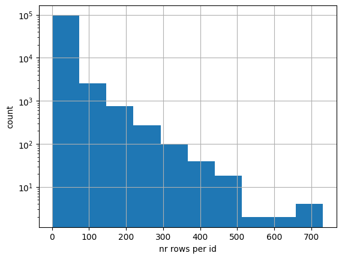
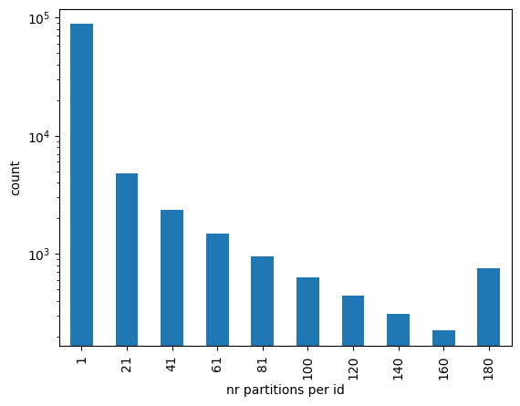
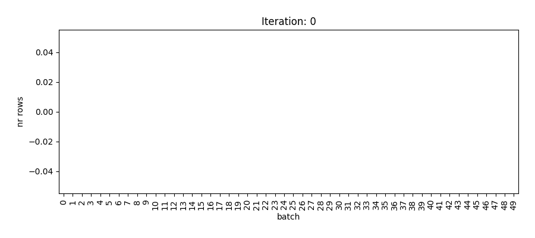

import matplotlib.pyplot as plt
from scipy.stats import gamma
n_rows_per_id = gamma.rvs(a=0.1, loc=1, scale=100, size=100_000).astype(int)
df = pd.DataFrame(np.hstack([[str(j)]*x for j, x in enumerate(n_rows_per_id)]),
columns=['id'])Reduce data skew in Spark using load balancing

Data skew
Data in a Spark cluster is divided over partitions. Two things are important about partitioning. First of all, partitions should not be too large. If a partition is too large, Spark is forced to spill to disk or the execution even crashes. When few partitions are significantly larger than others, you don’t make efficient usage of Spark’s parallism as you need to wait for the large tasks to be completed. Secondly, rows having the same key used for groupby or join operations should be in the same partition as much as possible. Moving data from one partition to the other (called shuffling) is time consuming and reduces the efficiency of your Spark jobs significantly.
In this blog post I propose an efficient way of data partitioning using greedy load balancing.
Create data
Let’s first create some artificial data with large data skew; many ‘id’ values only have a few rows and vice versa. In real life this could for example be many clients that buy a few products and few clients buy a lot of products. I use the gamma distribution to create this synthetic dataset.
Below we can see the distribution of the number of rows per id. Note that the vertical axis is in log scale.

Now we create a Spark dataframe from this Pandas dataframe and repartition it to 200 partitions, Spark’s default value when doing transformations.
sdf = spark.createDataFrame(df)
sdf = sdf.repartition(200)Let’s see how the number of partitions per id are distributed. The function spark_partition_id gives the partition id for each row. The histogram below shows that there are quite some ids (clients) that have their rows (products) divided over many partitions. When doing a groupby or join operation on the id key, a lot of shuffling is required. It is more efficient if we could divide the rows such that the ones with the same id value are in the same partition.
from pyspark.sql import functions as F
sdf = sdf.withColumn('partition_id', F.spark_partition_id())
Load balancing
To divide rows over the partitions such that partitions are equally large and rows with the same id are on the same partion as much as possible, we use a greedy load balancing algorithm. A heap queue can be used to implement such algorithm. A heap is a data structure that efficiently keeps its elements sorted. If you want to learn more about heaps, I recommend a clear explanation in this video.
In Python, heap queues are implemented by the heapq library. Python distributions like Anaconda include heapq so most likely you don’t need to install it yourself as you already have it.
import heapqFirst, we need to count the number of rows per id. We collect the results to local memory as this is the data we’re going to use for our heap:
id_counts = sdf.groupby('id').count().collect()
id_counts[:3] [Row(id='2088', count=127),
Row(id='8304', count=113),
Row(id='7252', count=95)]For the load balancing algoritm, we want to start with the id that has most rows. Therefore we sort the array of id counts in descending order:
id_counts_sorted = sorted(id_counts, key=lambda x: x['count'], reverse=True)Now let’s say we want to create 50 batches which we later can use for partitioning our dataframe. Each batch will be one partition. In reality it’s more likely you will use a larger number, but for visualisation purposes we limit it to 50. We create a heap where the elements are tuples containing the load as first entry and the batch number as second entry. The heap is initialised with all 50 batches having zero load.
To fill the batches with ids, we loop over the ids that are now sorted from largest to smallest. With the heappop function we remove the element from the heap with the smallest load (first entry of the tuple) and assign it to the variables load and batch. At the start of the process all elements in the heap are equal as they’re empty. In the dictionary id_to_batch we keep track of which id is assigned to with batch. After this assignment is done, we use heappush to add the element for the current batch back to the heap, but now with the added load. We iterate over all ids.
num_batches = 50heap = [(0,i) for i in range(num_batches)]heapq.heapify(heap)id_to_batch = {}
for row in id_counts_sorted:
count = row['count']
id_ = row['id']
load, batch = heapq.heappop(heap)
id_to_batch[id_] = batch
heapq.heappush(heap, (load + count, batch))The animation below shows how each of the 50 batches is filled until all ids are assigned.

Let’s now create a Spark dataframe from the load balancing algorithm result and join it to the original dataframe. This adds the ‘batch’ column that we can use to repartition the dataframe.
id_to_batch_sdf = spark.createDataFrame(list(zip(id_to_batch.keys(),
id_to_batch.values())),
schema=['id', 'batch'])sdf_with_batch = sdf.join(id_to_batch_sdf, on='id')First, we verify that we achieved our goals: equal size of the partitions and same ids (as much as possible) in the same batch (partition). I show below the all batches are indeed of equal size.
(sdf_with_batch.groupby('batch').count()
.select(F.min('count'), F.max('count'))
.show()) +----------+----------+
|min(count)|max(count)|
+----------+----------+
| 21311| 21311|
+----------+----------+
Moreover, we also see all ids are assigned to only a single batch.
(sdf_with_batch.groupby('id')
.agg(F.countDistinct('batch').alias('n_unique_batches'))
.select(F.min('n_unique_batches'), F.max('n_unique_batches'))
.show()) +---------------------+---------------------+
|min(n_unique_batches)|max(n_unique_batches)|
+---------------------+---------------------+
| 1| 1|
+---------------------+---------------------+
Now we’re ready to repartition our data based on the ‘batch’ column and save it:
sdf.write.partitionBy('batch').saveAsTable('mytable')
Note that this operation is only useful if you’re planning to do joins or groupby operations multiple times on your data. Otherwise the time and resources involved in applying the load balancing algorithm do not pay off.
All in one go
import heapq
def add_load_balancing_batch_col(sdf, id_column, num_batches=200):
"""
Function to apply the greedy load balancing algorithm to a Spark dataframe.
The result will be available in the added column 'batch'.
Args:
sdf: Spark dataframe
id_column: column to apply the greedy load balancing algorithm to
num_batches: number of batches to create
Returns:
Spark dataframe with added batch column
"""
id_counts = sdf.groupby(id_column).count().collect()
id_counts_sorted = sorted(id_counts, key=lambda x: x['count'], reverse=True)
heap = [(0, i) for i in range(num_batches)]
heapq.heapify(heap)
id_to_batch = {}
for row in id_counts_sorted:
count = row['count']
id_ = row[id_column]
load, batch = heapq.heappop(heap)
id_to_batch[id_] = batch
heapq.heappush(heap, (load + count, batch))
spark = sdf.sparkSession
id_to_batch_sdf = spark.createDataFrame(list(zip(id_to_batch.keys(),
id_to_batch.values())),
schema=[id_column, 'batch'])
return sdf.join(id_to_batch_sdf, on=id_column)sdf = add_load_balancing_batch_col(sdf, id_column='id', num_batches=200)